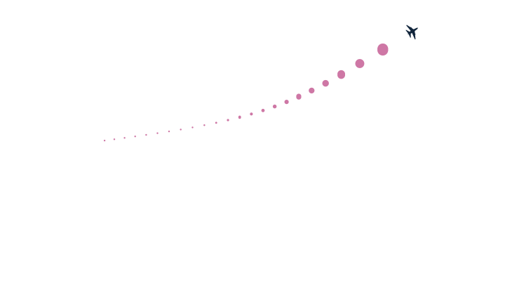
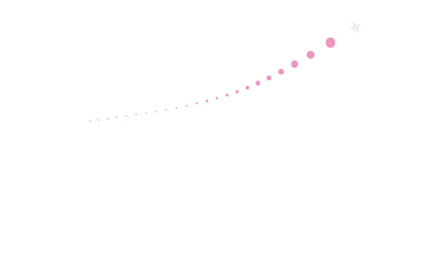
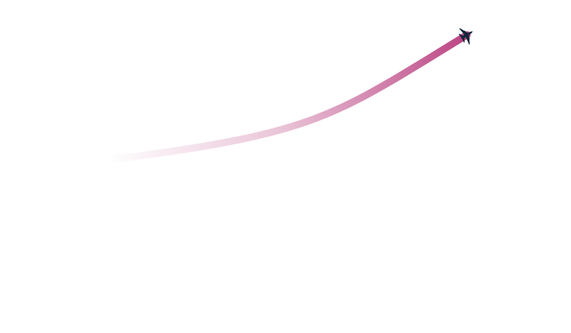
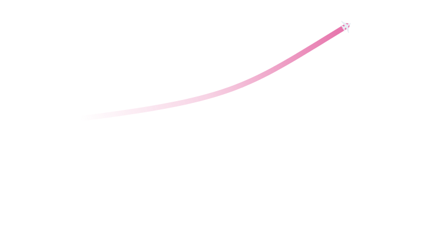

Motion trail · vector · three variations
Aircraft trail treatment
The last four minutes of travel, drawn in the air at the aircraft's own altitude rather than dropped onto the ground. Each trail is one path, projected from the aircraft's recent 3D positions through the view camera, so the app regenerates it every frame from coordinates.
Tapering solid
DAY
one closed outline · fill 50%
half-width 15 · age^0.95 · 1200/z
half-width 15 · age^0.95 · 1200/z
Tapering solid
NIGHT
reads as mass · strongest cue of heading
widest at the tail of the aircraft
widest at the tail of the aircraft
Dotted sequence
DAY

one dot per 10 s · 23 subpaths, one path
r 7 · age^0.9 · 1200/z, min 1.2
r 7 · age^0.9 · 1200/z, min 1.2
Dotted sequence
NIGHT

dot spacing carries speed
bunching reads as slower ground track
bunching reads as slower ground track
Fading gradient
DAY

centreline stroked 9 px, round caps
stops 0 → 0.26 → 0.85 along the track
stops 0 → 0.26 → 0.85 along the track
Fading gradient
NIGHT

quietest of the three at night
no width cue, so heading reads weakest
no width cue, so heading reads weakest
Over the live view


Generating the path
sample the last 240 s of positions
project each: sx = 360 + f·x/z, sy = 210 − f·y/z
f = 686.9 px at fovV 34° · shallow tilt
taper offset ±half-width along the screen normal
dots one arc pair per sample, 10 s apart
fade stroke the centreline, gradient on its endpoints
project each: sx = 360 + f·x/z, sy = 210 − f·y/z
f = 686.9 px at fovV 34° · shallow tilt
taper offset ±half-width along the screen normal
dots one arc pair per sample, 10 s apart
fade stroke the centreline, gradient on its endpoints
Perspective is in the width term, not just the geometry: 1200/z shrinks the trail as it recedes, so it thins with both distance and age.
Which to ship
The tapering solid carries heading and recency in one shape and survives the night sky at low opacity — it is the recommendation for the default map. Dots are the honest choice when speed matters more than direction, since spacing is a direct read of ground speed. The gradient is the quietest and the right pick if trails are ever shown for many aircraft at once, where solid ribbons would compete with the aircraft themselves.
trail ink #B0246E day · #E2589B night
every file exposes the trail as #trail
every file exposes the trail as #trail